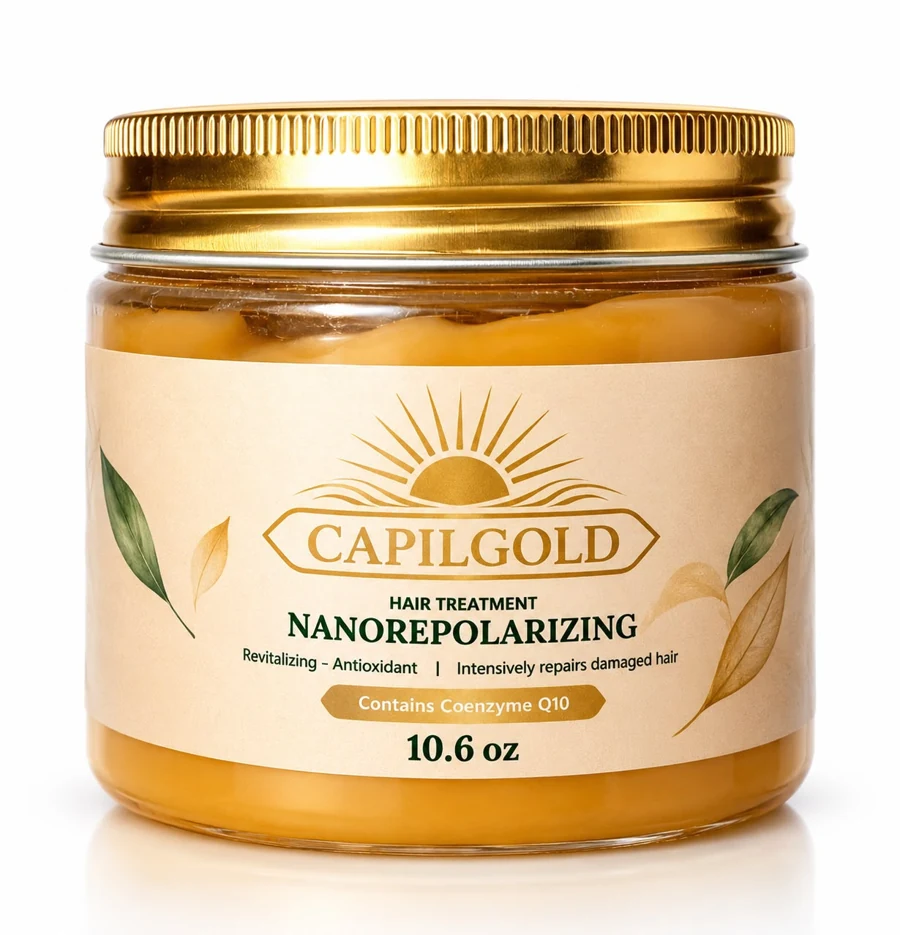
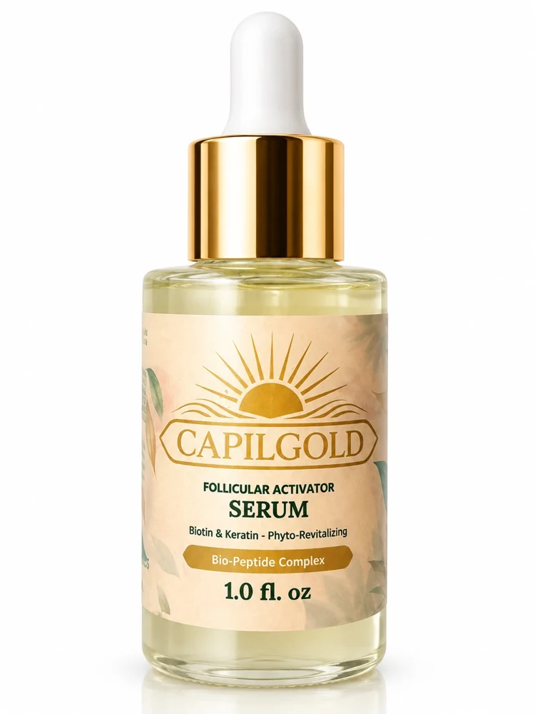

Cabello dañado
Ayuda a recuperar la apariencia saludable y vitalidad del cabello.
En Capilgold Hair Care tenemos la solución para combatir los principales problemas capilares y devolverle a tu cabello su vitalidad.


¿Sufres de cabello dañado, seco o sin vida? En Capilgold Hair Care tenemos la solución perfecta para ti.
Nuestra línea de productos especializados combate los principales problemas capilares, desde la caída hasta el frizz.
Experimenta la transformación de tu cabello y luce una melena espectacular.
Dale a tu cabello el cuidado que necesita.
Ayuda a recuperar la apariencia saludable y vitalidad del cabello.
Cuidado especializado para mejorar la hidratación y suavidad del cabello.
Productos enfocados en el cuidado del cuero cabelludo y el cabello.
Ayuda a conseguir un cabello más manejable, suave y con mejor apariencia.
Soluciones diseñadas para diferentes necesidades del cabello.
10.6 oz · Tratamiento con enjuague
Un cuidado intensivo para el cabello dañado. Su fórmula con Coenzima Q10, extractos botánicos y proteínas hidrolizadas ayuda a revitalizar la fibra capilar y recuperar su brillo natural.
Coenzima Q10 (ubiquinona), queratina hidrolizada, proteína de trigo hidrolizada, aminoácidos de seda, aceites de coco y argán. Incluye extractos botánicos como té verde, romero, ginkgo biloba y borojó.
Selección de ingredientes de la fórmula. Consulta la composición completa en la etiqueta del producto.
Uso externo únicamente. Evita el contacto directo con los ojos. Si aparece irritación, suspende su uso y consulta a un médico. Mantén fuera del alcance de niños y animales domésticos.
Conserva en un lugar fresco y seco, alejado de la luz solar directa y de fuentes de calor.
1.0 fl. oz · Sérum sin enjuague
Una fórmula de rápida absorción que ayuda a revitalizar y mejorar la apariencia de densidad del vello. Combina un complejo biopeptídico con biotina y queratina, sin dejar sensación grasa.
Complejo biopeptídico (SC-MH16 & BT1), biotina, queratina hidrolizada, extracto de ginseng, arginina y pantenol. La fórmula también contiene aloe vera y alantoína.
Selección de ingredientes de la fórmula. Consulta la composición completa en la etiqueta del producto.
Uso externo únicamente. Evita el contacto con los ojos. No apliques sobre piel irritada o con heridas, ni en caso de hipersensibilidad a sus ingredientes. Si presentas una reacción desfavorable, suspende su uso y consulta a un médico. Mantén fuera del alcance de niños y mascotas.
Conserva en un lugar fresco y seco, alejado de la luz solar directa y de fuentes de calor.
¿Necesitas orientación para elegir? Habla con nosotros.
Nuestra propuesta está enfocada en ayudarte a mejorar la apariencia y el cuidado de tu cabello.
Cuidado especializado
Soluciones para diferentes problemas capilares
Productos pensados para tu cabello
Una rutina de cuidado más completa
Para conocer nuestros productos y tratamientos, puedes comunicarte directamente con Capilgold Hair Care.